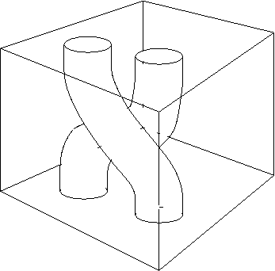

Start: September 2012

Leeds:
Jiannis Pachos,
Paul Martin,
Frank Nijhoff,
Zoltan Kadar, Giandomenico Palumbo,
Alex Bullivant, Abbas Al Shimary, James De Lisle,
Konstantinos Meichanetzidis, ...
York: Tim Spiller.
Visitors: Zhenghan Wang, Azat Gainutdinov, Gavin Brennen, Walter Mazorchuk,
Peter Finch, Ben Brown, Peter Bantay, Michael Keyl, Zoltan Zimboras, Shona Yu,
Hubert Saleur, Joao Faria Martins, Eric Rowell, ...
sister page here .
links to some of our seminars, conferences, and the VISITOR list .
People/Outputs
- Alex Bullivant
( arXiv )
- Alex Bullivant, Yuting Hu and Yidun Wan. Twisted quantum double model of topological orders with boundaries. Phys Rev B96 165138 (2017).
- Alex Bullivant, Jiannis K. Pachos. Entropic Topological Invariants in Three Dimensions. arXiv:1504.02868
- James de Lisle, Suvabrata De, Emilio Alba, Alex Bullivant, Juan J. Garcia-Ripoll, Ville Lahtinen, Jiannis K. Pachos. Detection of Chern numbers and entanglement in topological two-species systems through subsystem winding numbers. arXiv:1402.3222
- Zoltan Kadar
( arXiv )
- Z. Kadar, P. P. Martin, E. Rowell and Zhenghan Wang. Local representations of the loop braid group. arXiv:1411.3768
- Z. Kadar, P. P. Martin and Shona Yu. On geometrically defined extensions of the Temperley-Lieb category in the Brauer category. submitted.
- Zoltan Kadar, Michael Keyl, Robert Matjeschk, Geza Toth, Zoltan Zimboras. Simulating continuous quantum systems by mean field fluctuations
- Konstantinos Meichanetzidis
( arXiv )
- K Meichanetzidis, C Turner, A Farjami, Z Papic and J K Pachos. Free-fremion descriptions of parafermion chains and string-net models. Phys Rev B97 125104 (2018).
- Diagnosing Topological Edge States via Entanglement Monogamy
- Two-dimensional Chern semimetals on the Lieb lattice
- Jiannis Pachos
( arxiv )
- Alex Bullivant, Jiannis K. Pachos. Entropic Topological Invariants in Three Dimensions. arXiv:1504.02868
- Benjamin J. Brown, Daniel Loss, Jiannis K. Pachos, Chris N. Self, James R. Wootton. Quantum Memories at Finite Temperature. arXiv:1411.6643
- Peter Finch, James de Lisle, Giandomenico Palumbo, Jiannis K. Pachos. Induced topological order at the boundary of 3D topological superconductors. arXiv:1408.1038
- Benjamin J. Brown, Abbas Al-Shimary, Jiannis K. Pachos. Entropic Barriers for Two-Dimensional Quantum Memories. arXiv:1307.6222
- Paul Martin ( arxiv )
- P. P. Martin and V. Mazorchuk. Partitioned Binary Relations Mathematica Scandinavica 113 (2013) 30-52.
- Chwas Ahmed, Paul Martin, Volodymyr Mazorchuk. On the number of principal ideals in d-tonal partition monoids. arXiv:1503.06718
- Z. Kadar, P. P. Martin, E. Rowell and Zhenghan Wang. Local representations of the loop braid group. arXiv:1411.3768
- Giandomenico Palumbo
( arXiv )
- Giandomenico Palumbo, Konstantinos Meichanetzidis. Two-dimensional Chern semimetals on the Lieb lattice.
- Peter Finch, James de Lisle, Giandomenico Palumbo, Jiannis K. Pachos. Induced topological order at the boundary of 3D topological superconductors. arXiv:1408.1038
- Giandomenico Palumbo, Jiannis K. Pachos. Non-Abelian Chern-Simons Theory from a Hubbard-like Model. arXiv:1311.2871
- Frank Nijhoff ( arXiv )
- Tim Spiller
- James de Lisle ( arXiv )
- Nested Defects on the Boundary of Topological Superconductors
Caveat: the above list is not actively maintained! It might prove useful though.
Links and more
- Leeds QI group
- Example: Fendley and Krushkal's paper
- Example: Alvarez and Martin's paper
- Example: Jiannis' book
- Example: Zhenghan's book
Idea:
Try to build computers with quantum nature of physics used in software/hardware integration (rather than just ``accidentally'' as reason why some hardware components work).
Bleeding edge Physics (in the sense that quantum physics is functional as Engineering, but somewhat open as Physics).
and - serendipitously - ...
bleeding edge maths. Proposals for addressing the quantum computation challenge use mathematics from several areas (including category theory, diagram algebras, quantum groups, algebraic representation theory, K-theory, integrable systems, statistical mechanics, q-spin chains and so on).
-
-
* site under construction (work in progress!)